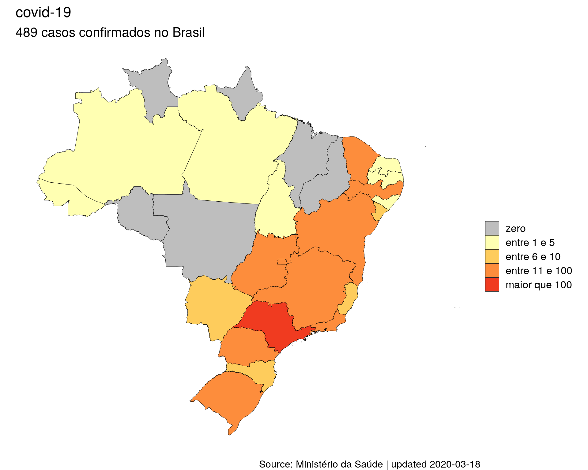
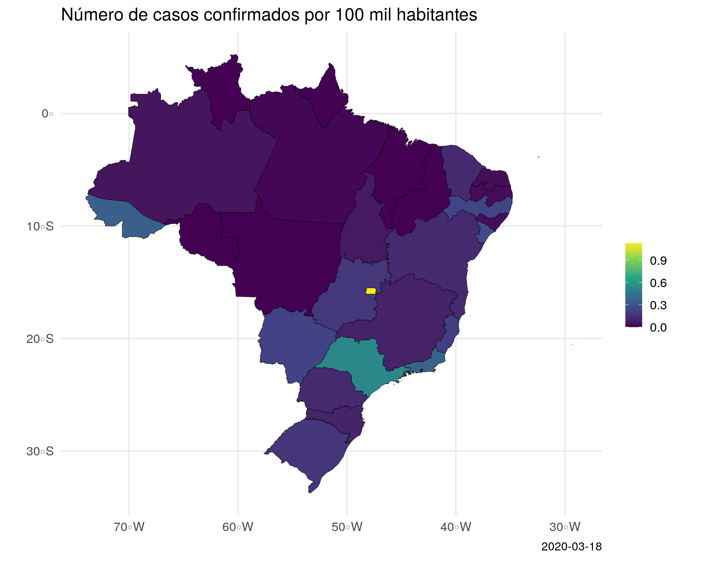

NOTAS:
* As análises abaixo representam apenas o número de casos confirmados pelo Ministério da Saúde, portanto, não se pode concluir uma relação direta destes números com o número real de pessoas infectadas por covid-19.
* Os resultados apresentados abaixo foram atualizados na data: 2020-03-18
Síntese dos dados oficiais
- Número de casos suspeitos: 8819
<<<<<<< HEAD
- Número de casos confirmados: 512
=======
- Número de casos confirmados: 489
>>>>>>> 5aaa3e40e0fd23c729547bf2327e8d5ed4f252c3
- Número de casos descartados: 1890
- Número de mortes por corona vírus: 4
Distribuição de casos de covid-19 no Brasil

Controlando pelo tamanho da população

Dados brutos por estado
<<<<<<< HEAD
=======
>>>>>>> 5aaa3e40e0fd23c729547bf2327e8d5ed4f252c3